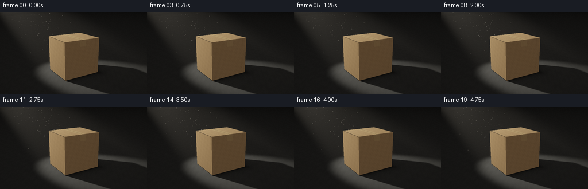
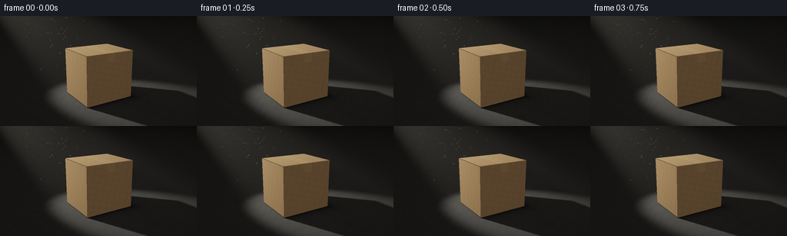

CODING AGENTS AS PIXEL WORLD MODELS
traex/GPT-6.1-Sol · phygen_045
点击播放 · 原生 RGB 像素
逐轮保存的候选
回放视频、检查图与代码变化。
每份候选均可单独播放。实际图片检查记录在下方工具轨迹中。
候选 01播放与检查图
点击播放 · 原生 RGB 像素


展开代码变化
--- 上一保存版本
+++ 本次保存版本
@@ -0,0 +1,252 @@
+"""Procedural, supersampled RGB rendering of a spotlight on a cardboard carton.
+Only numpy and Pillow are used: geometry, shadows and participating dust are local.
+"""
+from pathlib import Path
+import json
+import numpy as np
+from PIL import Image, ImageFilter
+import artifact_io
+
+ROOT = Path(__file__).resolve().parent
+SPEC = json.loads((ROOT / 'task_spec.json').read_text())
+W, H, N = SPEC['width'], SPEC['height'], SPEC['frames']
+SS = 3
+RW, RH = W*SS, H*SS
+rng = np.random.default_rng(45)
+
+def unit(v):
+ v = np.asarray(v, dtype=np.float32)
+ return v / np.maximum(np.linalg.norm(v, axis=-1, keepdims=True), 1e-9)
+
+def smooth(a,b,x):
+ t=np.clip((x-a)/(b-a),0,1)
+ return t*t*(3-2*t)
+
+# Camera, closed carton with barely rounded/chamfered cardboard edges.
+C=np.array([-3.5,2.75,5.6],np.float32)
+look=np.array([0.,.77,0.],np.float32)
+fwd=unit(look-C)
+right=unit(np.cross(fwd,[0,1,0]))
+up=unit(np.cross(right,fwd))
+focal=RH/(2*np.tan(np.deg2rad(27.5)/2))
+yy,xx=np.mgrid[:RH,:RW].astype(np.float32)
+D=unit(fwd+((xx+.5-RW/2)/focal)[...,None]*right-((yy+.5-RH/2)/focal)[...,None]*up)
+center=np.array([0,.725,0],np.float32)
+half=np.array([.77,.725,.67],np.float32)
+bevel=.013
+planes=[]
+for axis in range(3):
+ for s in [-1,1]:
+ n=np.zeros(3,np.float32); n[axis]=s
+ planes.append((n,half[axis]))
+for a,b in [(0,1),(0,2),(1,2)]:
+ for sa in [-1,1]:
+ for sb in [-1,1]:
+ n=np.zeros(3,np.float32);n[a]=sa;n[b]=sb
+ planes.append((n/np.sqrt(2),(half[a]+half[b]-bevel)/np.sqrt(2)))
+for sx in [-1,1]:
+ for sy in [-1,1]:
+ for sz in [-1,1]:
+ planes.append((np.array([sx,sy,sz],np.float32)/np.sqrt(3),(sum(half)-bevel*2)/np.sqrt(3)))
+
+def intersect_box(origin,direction):
+ shape=direction.shape[:-1]
+ near=np.full(shape,-1e8,np.float32)
+ far=np.full(shape,1e8,np.float32)
+ norms=np.zeros(direction.shape,np.float32)
+ org=origin-center
+ for n,b in planes:
+ den=np.sum(direction*n,axis=-1)
+ numer=b-np.sum(org*n,axis=-1)
+ t=numer/np.where(np.abs(den)>1e-9,den,1e-9)
+ entry=(den<0)&(t>near)
+ near=np.where(entry,t,near)
+ norms=np.where(entry[...,None],n,norms)
+ far=np.where(den>0,np.minimum(far,t),far)
+ far=np.where((np.abs(den)<1e-8)&(numer<0),-1e8,far)
+ hit=(far>=np.maximum(near,0))
+ return near,hit,norms
+
+def occlusion(origin,direction,maxdist):
+ # An accurate rectangular blocker; the tiny bevel is sub-pixel in the shadow.
+ lo=center-half; hi=center+half
+ safe=np.where(np.abs(direction)<1e-8,1e-8,direction)
+ t1=(lo-origin)/safe; t2=(hi-origin)/safe
+ enter=np.max(np.minimum(t1,t2),axis=-1)
+ leave=np.min(np.maximum(t1,t2),axis=-1)
+ return (leave>np.maximum(enter,.002))&(enter<maxdist-.003)
+
+bt,bhit,bnorm=intersect_box(C,D)
+ft=-C[1]/np.where(D[...,1]<-1e-8,D[...,1],-1e-8)
+fh=(D[...,1]<0)&(ft>0)
+box=bhit&((bt<ft)|~fh)
+t=np.where(box,bt,ft)
+P=C+D*t[...,None]
+norm=np.where(box[...,None],bnorm,np.array([0,1,0],np.float32))
+# Continuous analytic noise: no camera-space patterns or texture crawling.
+def noise2(u,v):
+ return (np.sin(u*19.73+v*13.09)*np.sin(u*8.23-v*21.1)*.40+
+ np.sin(u*63.31+v*48.83)*.20+
+ np.sin(u*197.77-v*103.61)*np.cos(v*283.3+u*71.9)*.13+
+ np.sin(u*913.7+v*739.1)*.065)
+
+ax=np.argmax(np.abs(norm),axis=-1)
+u=np.where(ax==0,P[...,2],P[...,0])
+v=np.where(ax==1,P[...,2],P[...,1])
+card_noise=noise2(u,v)
+# Very fine pulp fibers and a few irregular dark inclusions.
+pulp=np.sin(u*1827+np.sin(v*823)*1.5)*np.sin(v*257.8+u*99)*.012
+speck=np.maximum(np.sin(u*623.7+v*278.3)*np.sin(v*821.5-u*438.7)-.81,0)*.23
+albedo=np.empty(P.shape,np.float32)
+base=np.array([.48,.295,.145],np.float32)
+variation=1+.10*card_noise+pulp-speck
+albedo[:]=base*variation[...,None]
+# Minor vertical creases and seam/flap joints; no large lettering.
+side=(ax!=1)
+edge_u=np.where(ax==0,.67,.77)
+edge_v=np.where(ax==1,.67,1.45)
+edge_dist=np.where(side,np.minimum(edge_u-np.abs(u),np.minimum(v,1.45-v)),np.minimum(.77-np.abs(u),.67-np.abs(v)))
+albedo*= (1+.12*np.exp(-np.maximum(edge_dist,0)/.013))[...,None]
+creases=np.exp(-((u-.58)/.009)**2)*side*(.45+.55*np.sin(v*5.7)**2)
+albedo*= (1-.10*creases)[...,None]
+# Realistically translucent kraft sealing tape over the two top flaps,
+# folded over the ends of the carton, with a fine central closure line.
+top=box&(ax==1)&(norm[...,1]>.8)
+end=box&(ax==2)&(P[...,1]>1.20)
+tape=(top|end)&(np.abs(P[...,0])<.132)
+tape_noise=noise2(P[...,0]*.8,P[...,2]+P[...,1]*.4)
+tapecol=np.array([.54,.347,.166],np.float32)
+albedo=np.where(tape[...,None],tapecol*(1+.035*tape_noise[...,None]),albedo)
+seam=top& (np.abs(P[...,0])<.0055)
+albedo=np.where(seam[...,None],albedo*.43,albedo)
+# A slight line of adhesive at the tape's edge and subtle flap edges.
+te=top&(np.abs(np.abs(P[...,0])-.131)<.003)
+albedo=np.where(te[...,None],albedo*.87,albedo)
+flap=top&(np.abs(np.abs(P[...,2])-.59)<.0035)
+albedo=np.where(flap[...,None],albedo*.80,albedo)
+# Matte charcoal concrete. Long-range illumination falls to black, no horizon.
+fn=noise2(P[...,0]*.4,P[...,2]*.4)
+fine=noise2(P[...,0]*3.7,P[...,2]*3.7)
+floorcol=np.array([.065,.069,.073],np.float32)*(1+.10*fn[...,None]+.035*fine[...,None])
+albedo=np.where(box[...,None],albedo,floorcol)
+
+L=np.array([-3.6,5.3,-5.5],np.float32)
+axis=unit(np.array([0.,.70,0.],np.float32)-L)
+inner=np.cos(np.deg2rad(8.0)); outer=np.cos(np.deg2rad(12.7))
+light_rgb=np.array([1.,.91,.75],np.float32)
+power=155.
+
+def light_at(q,l=L):
+ delta=q-l
+ dist2=np.sum(delta*delta,axis=-1)
+ direct=delta/np.sqrt(np.maximum(dist2,1e-9))[...,None]
+ cone=smooth(outer,inner,np.sum(direct*axis,axis=-1))
+ return power/np.maximum(dist2,.1)*cone,direct,np.sqrt(dist2)
+
+# Nine deterministic emitter samples give a crisp base and soft long penumbra.
+key=np.zeros_like(P)
+lside=unit(np.cross(axis,[0,1,0])); lup=unit(np.cross(lside,axis))
+samples=[(0.,0.)]
+for a in np.linspace(0,2*np.pi,8,endpoint=False):
+ samples.append((.11*np.cos(a),.11*np.sin(a)))
+for a,b in samples:
+ lp=L+lside*a+lup*b
+ energy,ld,distance=light_at(P,lp)
+ ndl=np.maximum(np.sum(norm*(-ld),axis=-1),0)
+ blocked=occlusion(P+norm*.002,-ld,distance)
+ key+=albedo*(energy*ndl*~blocked)[...,None]*light_rgb/len(samples)
+
+# Low studio-like bounced illumination keeps the unlit paper face readable,
+# while the dark room stays convincingly dark. Contact occlusion anchors box.
+view=unit(C-P)
+fill_dir=unit(np.array([-.6,2.1,4.5],np.float32))
+fill=np.maximum(np.sum(norm*fill_dir,axis=-1),0)
+ambient=albedo*(.072+.17*fill)[...,None]*np.array([1,.90,.78],np.float32)
+fdx=np.maximum(np.abs(P[...,0])-.77,0)
+fdz=np.maximum(np.abs(P[...,2])-.67,0)
+contact=np.exp(-np.sqrt(fdx*fdx+fdz*fdz)/.17)
+ambient*=np.where(box,1.,1-.80*contact)[...,None]
+# Soft tape sheen, not plastic gloss on the paper.
+_,ld,_=light_at(P)
+hv=unit(-ld+view)
+spec=np.maximum(np.sum(norm*hv,axis=-1),0)**45
+energy,_,_=light_at(P)
+blocked=occlusion(P+norm*.003,-ld,np.linalg.norm(P-L,axis=-1))
+key+=(spec*energy*(.018+.10*tape)*~blocked)[...,None]*light_rgb
+
+# Single scattering in thin room haze, integrated only in front of surfaces.
+# Blocking the light at sample locations also carves out the box's dark wake.
+volume=np.zeros_like(P)
+steps=56
+step=t/steps
+for j in range(steps):
+ distance=step*(j+.5)
+ q=C+D*distance[...,None]
+ strength,dout,ldist=light_at(q)
+ blocked=occlusion(q,-dout,ldist)
+ cosine=np.sum(dout*(-D),axis=-1)
+ g=.32
+ phase=(1-g*g)/(4*np.pi*np.maximum(1+g*g-2*g*cosine,.001)**1.5)
+ # Sparse dusty haze has very subtle spatial modulation, not clouds.
+ density=.029*(1+.12*np.sin(q[...,0]*1.8+q[...,2]*.8))
+ atten=np.exp(-.024*(distance+ldist))
+ volume+=(strength*phase*density*step*atten*~blocked)[...,None]*light_rgb
+# The dim ambient background and beam are not overexposed.
+trans=np.exp(-.015*t)[...,None]
+ambient*=trans; key*=trans
+
+# Dust particles in actual 3-D: depth-tested, confined to the lit cone.
+particles=[]
+for i in range(165):
+ s=rng.uniform(.19,.91)
+ pos=L+axis*(s*8.0)+lside*rng.uniform(-1.10,1.10)*s+lup*rng.uniform(-1.05,1.05)*s
+ velocity=np.array([rng.uniform(-.035,.035),rng.uniform(-.033,-.010),rng.uniform(-.012,.012)],np.float32)
+ particles.append((pos,velocity,rng.uniform(.13,.38),rng.uniform(.018,.065)))
+
+def tonemap(x):
+ x=np.maximum(x,0)*1.08
+ # Gently filmic highlights, sRGB output, black floor preserved.
+ mapped=x/(1+x)
+ return np.where(mapped<=.0031308,12.92*mapped,1.055*mapped**(1/2.4)-.055)
+
+frames=[]
+# Fixed sensor texture prevents synthetic flashing in the dark.
+sensor=rng.normal(0,.34,(H,W,1)).astype(np.float32)
+for frame in range(N):
+ time=frame/SPEC['fps']
+ brightness=1+.006*np.sin(time*1.2)+.002*np.sin(time*4.3)
+ radiance=ambient+(key+volume)*brightness
+ dust=np.zeros_like(radiance)
+ for p0,vel,sz,intensity in particles:
+ p=p0+vel*time
+ rel=p-C
+ depth=np.dot(rel,fwd)
+ if depth<=0: continue
+ px=RW/2+focal*np.dot(rel,right)/depth-.5
+ py=RH/2-focal*np.dot(rel,up)/depth-.5
+ if not (2<px<RW-2 and 2<py<RH-2): continue
+ ix,iy=int(px),int(py)
+ distance=np.linalg.norm(rel)
+ if distance>t[iy,ix]-.025: continue
+ strength,dr,ldist=light_at(p)
+ if strength<.15 or occlusion(p,-dr,ldist): continue
+ radius=sz*SS
+ extent=max(2,int(radius*3))
+ x0=max(0,ix-extent);x1=min(RW,ix+extent+1)
+ y0=max(0,iy-extent);y1=min(RH,iy+extent+1)
+ oy,ox=np.mgrid[y0:y1,x0:x1]
+ gaussian=np.exp(-((ox-px)**2+(oy-py)**2)/(2*radius**2))
+ alpha=intensity*min(float(strength),3)*gaussian
+ dust[y0:y1,x0:x1]+=alpha[...,None]*light_rgb
+ rgb=tonemap(radiance+dust)
+ # Gentle lens vignette and efficient high-quality area downsampling.
+ radial=((xx-RW/2)/(RW*.70))**2+((yy-RH/2)/(RH*.90))**2
+ rgb*=np.clip(1-.14*radial,.75,1)[...,None]
+ rgb8=np.uint8(np.clip(rgb*255,0,255))
+ im=Image.fromarray(rgb8).resize((W,H),Image.Resampling.LANCZOS)
+ out=np.asarray(im).astype(np.float32)+sensor
+ frames.append(np.uint8(np.clip(out,0,255)))
+frames=np.stack(frames)
+artifact_io.save(frames,ROOT)
+print('Saved',frames.shape,frames.dtype,'RGB frames')
+print('Frame luminance percentiles:',np.percentile(frames[0].mean(axis=-1),[0,10,50,90,99,100]))
可观测工具轨迹
实际执行的命令与返回图片。
命令 1exit 0
/bin/bash -lc "pwd && ls -la && cat prompt.txt && printf '\\n--- RULES ---\\n' && cat GENERATION_RULES.md && printf '\\n--- SPEC ---\\n' && cat task_spec.json"
命令 2exit 0
/bin/bash -lc "cat artifact_io.py && printf '\\n--- packages ---\\n' && python - <<'PY'
import numpy,PIL
print('numpy',numpy.__version__,'Pillow',PIL.__version__)
PY"命令 3exit 0
/bin/bash -lc "cat > generate.py <<'PY'
\"\"\"Procedural, supersampled RGB rendering of a spotlight on a cardboard carton.
Only numpy and Pillow are used: geometry, shadows and participating dust are local.
\"\"\"
from pathlib import Path
import json
import numpy as np
from PIL import Image, ImageFilter
import artifact_io
ROOT = Path(__file__).resolve().parent
SPEC = json.loads((ROOT / 'task_spec.json').read_text())
W, H, N = SPEC['width'], SPEC['height'], SPEC['frames']
SS = 3
RW, RH = W*SS, H*SS
rng = np.random.default_rng(45)
def unit(v):
v = np.asarray(v, dtype=np.float32)
return v / np.maximum(np.linalg.norm(v, axis=-1, keepdims=True), 1e-9)
def smooth(a,b,x):
t=np.clip((x-a)/(b-a),0,1)
return t*t*(3-2*t)
# Camera, closed carton with barely rounded/chamfered cardboard edges.
C=np.array([-3.5,2.75,5.6],np.float32)
look=np.array([0.,.77,0.],np.float32)
fwd=unit(look-C)
right=unit(np.cross(fwd,[0,1,0]))
up=unit(np.cross(right,fwd))
focal=RH/(2*np.tan(np.deg2rad(27.5)/2))
yy,xx=np.mgrid[:RH,:RW].astype(np.float32)
D=unit(fwd+((xx+.5-RW/2)/focal)[...,None]*right-((yy+.5-RH/2)/focal)[...,None]*up)
center=np.array([0,.725,0],np.float32)
half=np.array([.77,.725,.67],np.float32)
bevel=.013
planes=[]
for axis in range(3):
for s in [-1,1]:
n=np.zeros(3,np.float32); n[axis]=s
planes.append((n,half[axis]))
for a,b in [(0,1),(0,2),(1,2)]:
for sa in [-1,1]:
for sb in [-1,1]:
n=np.zeros(3,np.float32);n[a]=sa;n[b]=sb
planes.append((n/np.sqrt(2),(half[a]+half[b]-bevel)/np.sqrt(2)))
for sx in [-1,1]:
for sy in [-1,1]:
for sz in [-1,1]:
planes.append((np.array([sx,sy,sz],np.float32)/np.sqrt(3),(sum(half)-bevel*2)/np.sqrt(3)))
def intersect_box(origin,direction):
shape=direction.shape[:-1]
near=np.full(shape,-1e8,np.float32)
far=np.full(shape,1e8,np.float32)
norms=np.zeros(direction.shape,np.float32)
org=origin-center
for n,b in planes:
den=np.sum(direction*n,axis=-1)
numer=b-np.sum(org*n,axis=-1)
t=numer/np.where(np.abs(den)>1e-9,den,1e-9)
entry=(den<0)&(t>near)
near=np.where(entry,t,near)
norms=np.where(entry[...,None],n,norms)
far=np.where(den>0,np.minimum(far,t),far)
far=np.where((np.abs(den)<1e-8)&(numer<0),-1e8,far)
hit=(far>=np.maximum(near,0))
return near,hit,norms
def occlusion(origin,direction,maxdist):
# An accurate rectangular blocker; the tiny bevel is sub-pixel in the shadow.
lo=center-half; hi=center+half
safe=np.where(np.abs(direction)<1e-8,1e-8,direction)
t1=(lo-origin)/safe; t2=(hi-origin)/safe
enter=np.max(np.minimum(t1,t2),axis=-1)
leave=np.min(np.maximum(t1,t2),axis=-1)
return (leave>np.maximum(enter,.002))&(enter<maxdist-.003)
bt,bhit,bnorm=intersect_box(C,D)
ft=-C[1]/np.where(D[...,1]<-1e-8,D[...,1],-1e-8)
fh=(D[...,1]<0)&(ft>0)
box=bhit&((bt<ft)|~fh)
t=np.where(box,bt,ft)
P=C+D*t[...,None]
norm=np.where(box[...,None],bnorm,np.array([0,1,0],np.float32))
# Continuous analytic noise: no camera-space patterns or texture crawling.
def noise2(u,v):
return (np.sin(u*19.73+v*13.09)*np.sin(u*8.23-v*21.1)*.40+
np.sin(u*63.31+v*48.83)*.20+
np.sin(u*197.77-v*103.61)*np.cos(v*283.3+u*71.9)*.13+
np.sin(u*913.7+v*739.1)*.065)
ax=np.argmax(np.abs(norm),axis=-1)
u=np.where(ax==0,P[...,2],P[...,0])
v=np.where(ax==1,P[...,2],P[...,1])
card_noise=noise2(u,v)
# Very fine pulp fibers and a few irregular dark inclusions.
pulp=np.sin(u*1827+np.sin(v*823)*1.5)*np.sin(v*257.8+u*99)*.012
speck=np.maximum(np.sin(u*623.7+v*278.3)*np.sin(v*821.5-u*438.7)-.81,0)*.23
albedo=np.empty(P.shape,np.float32)
base=np.array([.48,.295,.145],np.float32)
variation=1+.10*card_noise+pulp-speck
albedo[:]=base*variation[...,None]
# Minor vertical creases and seam/flap joints; no large lettering.
side=(ax"'!=1)
edge_u=np.where(ax==0,.67,.77)
edge_v=np.where(ax==1,.67,1.45)
edge_dist=np.where(side,np.minimum(edge_u-np.abs(u),np.minimum(v,1.45-v)),np.minimum(.77-np.abs(u),.67-np.abs(v)))
albedo*= (1+.12*np.exp(-np.maximum(edge_dist,0)/.013))[...,None]
creases=np.exp(-((u-.58)/.009)**2)*side*(.45+.55*np.sin(v*5.7)**2)
albedo*= (1-.10*creases)[...,None]
# Realistically translucent kraft sealing tape over the two top flaps,
# folded over the ends of the carton, with a fine central closure line.
top=box&(ax==1)&(norm[...,1]>.8)
end=box&(ax==2)&(P[...,1]>1.20)
tape=(top|end)&(np.abs(P[...,0])<.132)
tape_noise=noise2(P[...,0]*.8,P[...,2]+P[...,1]*.4)
tapecol=np.array([.54,.347,.166],np.float32)
albedo=np.where(tape[...,None],tapecol*(1+.035*tape_noise[...,None]),albedo)
seam=top& (np.abs(P[...,0])<.0055)
albedo=np.where(seam[...,None],albedo*.43,albedo)
# A slight line of adhesive at the tape'"'s edge and subtle flap edges.
te=top&(np.abs(np.abs(P[...,0])-.131)<.003)
albedo=np.where(te[...,None],albedo*.87,albedo)
flap=top&(np.abs(np.abs(P[...,2])-.59)<.0035)
albedo=np.where(flap[...,None],albedo*.80,albedo)
# Matte charcoal concrete. Long-range illumination falls to black, no horizon.
fn=noise2(P[...,0]*.4,P[...,2]*.4)
fine=noise2(P[...,0]*3.7,P[...,2]*3.7)
floorcol=np.array([.065,.069,.073],np.float32)*(1+.10*fn[...,None]+.035*fine[...,None])
albedo=np.where(box[...,None],albedo,floorcol)
L=np.array([-3.6,5.3,-5.5],np.float32)
axis=unit(np.array([0.,.70,0.],np.float32)-L)
inner=np.cos(np.deg2rad(8.0)); outer=np.cos(np.deg2rad(12.7))
light_rgb=np.array([1.,.91,.75],np.float32)
power=155.
def light_at(q,l=L):
delta=q-l
dist2=np.sum(delta*delta,axis=-1)
direct=delta/np.sqrt(np.maximum(dist2,1e-9))[...,None]
cone=smooth(outer,inner,np.sum(direct*axis,axis=-1))
return power/np.maximum(dist2,.1)*cone,direct,np.sqrt(dist2)
# Nine deterministic emitter samples give a crisp base and soft long penumbra.
key=np.zeros_like(P)
lside=unit(np.cross(axis,[0,1,0])); lup=unit(np.cross(lside,axis))
samples=[(0.,0.)]
for a in np.linspace(0,2*np.pi,8,endpoint=False):
samples.append((.11*np.cos(a),.11*np.sin(a)))
for a,b in samples:
lp=L+lside*a+lup*b
energy,ld,distance=light_at(P,lp)
ndl=np.maximum(np.sum(norm*(-ld),axis=-1),0)
blocked=occlusion(P+norm*.002,-ld,distance)
key+=albedo*(energy*ndl*~blocked)[...,None]*light_rgb/len(samples)
# Low studio-like bounced illumination keeps the unlit paper face readable,
# while the dark room stays convincingly dark. Contact occlusion anchors box.
view=unit(C-P)
fill_dir=unit(np.array([-.6,2.1,4.5],np.float32))
fill=np.maximum(np.sum(norm*fill_dir,axis=-1),0)
ambient=albedo*(.072+.17*fill)[...,None]*np.array([1,.90,.78],np.float32)
fdx=np.maximum(np.abs(P[...,0])-.77,0)
fdz=np.maximum(np.abs(P[...,2])-.67,0)
contact=np.exp(-np.sqrt(fdx*fdx+fdz*fdz)/.17)
ambient*=np.where(box,1.,1-.80*contact)[...,None]
# Soft tape sheen, not plastic gloss on the paper.
_,ld,_=light_at(P)
hv=unit(-ld+view)
spec=np.maximum(np.sum(norm*hv,axis=-1),0)**45
energy,_,_=light_at(P)
blocked=occlusion(P+norm*.003,-ld,np.linalg.norm(P-L,axis=-1))
key+=(spec*energy*(.018+.10*tape)*~blocked)[...,None]*light_rgb
# Single scattering in thin room haze, integrated only in front of surfaces.
# Blocking the light at sample locations also carves out the box's dark wake.
volume=np.zeros_like(P)
steps=56
step=t/steps
for j in range(steps):
distance=step*(j+.5)
q=C+D*distance[...,None]
strength,dout,ldist=light_at(q)
blocked=occlusion(q,-dout,ldist)
cosine=np.sum(dout*(-D),axis=-1)
g=.32
phase=(1-g*g)/(4*np.pi*np.maximum(1+g*g-2*g*cosine,.001)**1.5)
# Sparse dusty haze has very subtle spatial modulation, not clouds.
density=.029*(1+.12*np.sin(q[...,0]*1.8+q[...,2]*.8))
atten=np.exp(-.024*(distance+ldist))
volume+=(strength*phase*density*step*atten*~blocked)[...,None]*light_rgb
# The dim ambient background and beam are not overexposed.
trans=np.exp(-.015*t)[...,None]
ambient*=trans; key*=trans
# Dust particles in actual 3-D: depth-tested, confined to the lit cone.
particles=[]
for i in range(165):
s=rng.uniform(.19,.91)
pos=L+axis*(s*8.0)+lside*rng.uniform(-1.10,1.10)*s+lup*rng.uniform(-1.05,1.05)*s
velocity=np.array([rng.uniform(-.035,.035),rng.uniform(-.033,-.010),rng.uniform(-.012,.012)],np.float32)
particles.append((pos,velocity,rng.uniform(.13,.38),rng.uniform(.018,.065)))
def tonemap(x):
x=np.maximum(x,0)*1.08
# Gently filmic highlights, sRGB output, black floor preserved.
mapped=x/(1+x)
return np.where(mapped<=.0031308,12.92*mapped,1.055*mapped**(1/2.4)-.055)
frames=[]
# Fixed sensor texture prevents synthetic flashing in the dark.
sensor=rng.normal(0,.34,(H,W,1)).astype(np.float32)
for frame in range(N):
time=frame/SPEC['fps']
brightness=1+.006*np.sin(time*1.2)+.002*np.sin(time*4.3)
radiance=ambient+(key+volume)*brightness
dust=np.zeros_like(radiance)
for p0,vel,sz,intensity in particles:
p=p0+vel*time
rel=p-C
depth=np.dot(rel,fwd)
if depth<=0: continue
px=RW/2+focal*np.dot(rel,right)/depth-.5
py=RH/2-focal*np.dot(rel,up)/depth-.5
if not (2<px<RW-2 and 2<py<RH-2): continue
ix,iy=int(px),int(py)
distance=np.linalg.norm(rel)
if distance>t[iy,ix]-.025: continue
strength,dr,ldist=light_at(p)
if strength<.15 or occlusion(p,-dr,ldist): continue
radius=sz*SS
extent=max(2,int(radius*3))
x0=max(0,ix-extent);x1=min(RW,ix+extent+1)
y0=max(0,iy-extent);y1=min(RH,iy+extent+1)
oy,ox=np.mgrid[y0:y1,x0:x1]
gaussian=np.exp(-((ox-px)**2+(oy-py)**2)/(2*radius**2))
alpha=intensity*min(float(strength),3)*gaussian
dust[y0:y1,x0:x1]+=alpha[...,None]*light_rgb
rgb=tonemap(radiance+dust)
# Gentle lens vignette and efficient high-quality area downsampling.
radial=((xx-RW/2)/(RW*.70))**2+((yy-RH/2)/(RH*.90))**2
rgb*=np.clip(1-.14*radial,.75,1)[...,None]
rgb8=np.uint8(np.clip(rgb*255,0,255))
im=Image.fromarray(rgb8).resize((W,H),Image.Resampling.LANCZOS)
out=np.asarray(im).astype(np.float32)+sensor
frames.append(np.uint8(np.clip(out,0,255)))
frames=np.stack(frames)
artifact_io.save(frames,ROOT)
print('Saved',frames.shape,frames.dtype,'RGB frames')
print('Frame luminance percentiles:',np.percentile(frames[0].mean(axis=-1),[0,10,50,90,99,100]))
PY
python generate.py"命令 4exit 0
/bin/bash -lc "python - <<'PY'
import numpy as np
from PIL import Image
C=np.array([-3.5,2.75,5.6]);f=np.array([0,.77,0])-C;f/=np.linalg.norm(f);r=np.cross(f,[0,1,0]);r/=np.linalg.norm(r);u=np.cross(r,f);fc=144/(2*np.tan(np.deg2rad(27.5)/2))
def proj(p):
p=np.array(p)-C;dep=np.dot(p,f);return np.round([128+fc*np.dot(p,r)/dep,72-fc*np.dot(p,u)/dep],1)
for p in [[-3.6,5.3,-5.5],[0,1.45,0],[0,0,0],[.985,0,1.50],[0,1,0]]:print(p,proj(p))
a=np.array(Image.open('frames/00.png')).mean(2)
small=np.array(Image.fromarray(a.astype('uint8')).resize((80,35))).astype(float)
chars=' .,:;irsXA253hMHGS#9B&@'
for row in small:
print(''.join(chars[min(len(chars)-1,int(v/175*(len(chars)-1)))] for v in row))
print('\\nFrame files:',len(list(__import__('pathlib').Path('frames').glob('*.png'))))
z=np.load('pixels.npz')['pixels'];print('Packed tensor',z.shape,z.dtype)
PY"命令 5exit 1
/bin/bash -lc 'command -v ffmpeg && ls -lh pixels.npz index.html inspection.png'
命令 6exit 0
/bin/bash -lc "ls -lh generate.py pixels.npz index.html inspection.png transition_check.png && python - <<'PY'
from pathlib import Path
import numpy as np
from PIL import Image
p=Path('.')
f=np.stack([np.asarray(Image.open(p/'frames'/f'{i:02d}.png')) for i in range(20)])
assert f.shape==(20,144,256,3) and f.dtype==np.uint8
assert all((p/n).is_file() for n in ['generate.py','pixels.npz','index.html','inspection.png','transition_check.png'])
print('Validated: 20 RGB frames, 256 Ã 144, 4 fps, 5 seconds.')
print('Mean consecutive-frame pixel change:',round(float(np.abs(np.diff(f.astype(float),axis=0)).mean()),4))
PY"保存候选 1 份；完成命令 6 次；可验证图片返回 0 张。原始 API 响应与完整日志保留在本地。